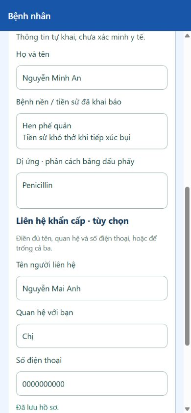

12/11/2026 — chụp mới
1. Hồ sơ sức khỏe cá nhân
Thao tác: Mở Patient sau khi đổi tên hiển thị.
Quan sát: Tên Nguyễn Minh An; hồ sơ bệnh nền và dị ứng được khôi phục từ Firebase.
Nói khi thuyết trình: Người bệnh quản lý thông tin trước khi cần hỗ trợ.